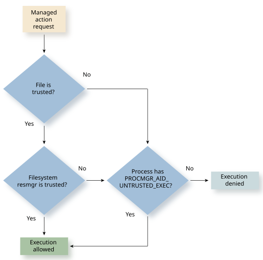

The pathtrust feature prevents processes from executing untrusted code. If a process
is compromised, pathtrust mitigates the threat of the system being further compromised by an
attacker using chained-together exploits.
For example, pathtrust can mitigate a Return-Oriented Programming (ROP) attack that
chains existing instructions to initiate a system call that points to an attacker's
binary executable that is persisted somewhere on a non-trusted filesystem. (This
filesystem is usually a read/write partition where data is stored.)
Actions managed by pathtrust
- Binary execution — The process loader loads and executes a native
binary.
- Library loading — The process loader loads libraries when a native
binary is executed or as a result of a dlopen()
call.
How pathtrust works
The following diagram illustrates how
pathtrust reacts when a process attempts one of the actions that pathtrust
manages.

Pathtrust and setuid and setgid bits on the filesystem
When pathtrust
is enabled, the setuid or setgid bits on untrusted files or files from untrusted
filesystem resource managers are ignored. All untrusted filesystems are implicitly
mounted with
-o nosuid and a resource manager cannot provide a setuid
binary unless it is authorized. (See
mount in the
Utilities
Reference).
Using pathtrust on a system
The pathtrust feature requires the
following configuration and settings:
- Start procnto with -qt (see procnto* in the Utilities
Reference).
- The devb-* process that mounts a filesystem as trusted has
the PROCMGR_AID_PATH_TRUST ability. If the system is not using
security policies, you have to allow and lock this ability for
devb-*.
-
The filesystem is mounted on an integrity protected partition such as QNX
Trusted Disk (QTD).
Note: The primary IFS is implicitly trusted at all times. Its integrity
protection can be provided by secure boot (see
Secure boot
).
Make sure that only filesystems that fully qualify as trusted are mounted as
trusted, not simply ones that have integrity protection.
For example, your system has a third-party app store that places the apps in
a filesystem protected by QTD to ensure their integrity. Although the
partition is integrity protected, because the apps themselves are not
trusted, you should not mount the filesystem as trusted.
- The process that executes mount with the 'trusted' mount flag
(specified with the -o trusted option) has the
PROCMGR_AID_PATH_TRUST ability.
Note: mkqnximage supports the
--pathtrust option, which demonstrates how to enable this
feature.
Selecting resources to trust
Use the following best practices for
trusted processes and filesystems:
- Put programs that you build yourself or come from a trusted supplier (e.g., QNX)
in a filesystem that is mounted as trusted.
- Programs that come from third parties that have no reason to be trusted should
be put in filesystems that are not mounted as trusted.
- In most cases, trusted programs should be run from filesystems mounted as
trusted and not given the PROCMGR_AID_UNTRUSTED_EXEC ability.
Untrusted programs, such as third-party applications, should be run from
filesystems that are not mounted as trusted and given the
PROCMGR_AID_UNTRUSTED_EXEC ability.
- QNX recommends that interpreters for languages such as Python not be put in
trusted filesystems because although pathtrust protects against the Python
binary being loaded, it does not prevent the execution of untrusted Python
scripts.
Example
# Mount the integrity protected partition that uses QNX Trusted Disk
mount -t qtd -o trusted,key=/path/to/public.pem /partition /qtd
# Mount the QNX6 filesystem protected by QTD
mount -t qnx6 -o ro,trusted /qtd /fs
Use the mount -f and df -g commands
to display the 'trusted' mount option on mountpoints where it is enabled.